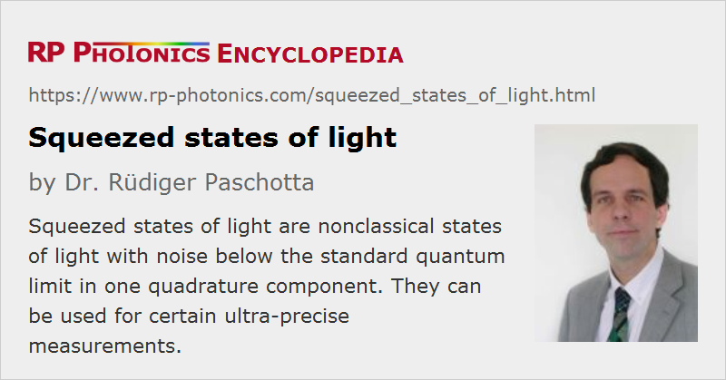

Squeezed States of Light
Definition: nonclassical states of light with noise below the standard quantum limit in one quadrature component
More general term: nonclassical states of light
More specific terms: amplitude-squeezed light, phase-squeezed light
Opposite terms: classical light
German: gequetschte Lichtzustände
Categories: quantum optics, fluctuations and noise
How to cite the article; suggest additional literature
Author: Dr. Rüdiger Paschotta
Squeezed states of light (or squeezed light) are a kind of nonclassical light and constitute an interesting subject of quantum optics, the experimental investigation of which began in the 1980s.
Squeezed light is best understood by considering complex phasors for the representation of the state of light in one mode of the optical field. Classically, such a state can be represented by a certain phasor (or its end point in the complex plane). According to quantum optics, however, there is a quantum uncertainty, and any measurement of the complex amplitude of the light field can deliver different values within an uncertainty region. Moreover, there is an uncertainty relation for the quadrature components of the light field, saying that the product of the uncertainties in both components is at least some quantity times Planck's constant.
Glauber's coherent states have circularly symmetric uncertainty regions, so that the uncertainty relation dictates some minimum noise amplitudes e.g. for the amplitude and phase. A further reduction in, e.g., amplitude noise is possible only by “squeezing” the uncertainty region, reducing its width in the amplitude direction while increasing it in the orthogonal direction, so that the phase uncertainty is increased. Such light is called amplitude-squeezed (see Figure 1, left). Conversely, phase-squeezed light (Figure 1, middle) has decreased phase fluctuations at the expense of increased amplitude fluctuations.
Of course, there are also squeezed states where the orientation of the uncertainty region is different from the cases shown, or where the shape of the uncertainty region is different from that of an ellipse. In any case, some noise component is below the standard quantum limit.
There is also the so-called squeezed vacuum (Figure 1, right), where the center of the uncertainty region (corresponding to the average amplitude) is at the origin of the coordinate system, and the fluctuations are reduced in some direction. The mean photon number is larger than zero in this case; a squeezed vacuum is a “vacuum” only in the sense that the average amplitude (but not the average photon number) is zero. Squeezed light with a non-zero average amplitude is also called bright squeezed light.
Quantum noise also leads to fluctuations of the polarization, which are reduced in polarization-squeezed light.
Generation of Squeezed Light
Squeezed light can be generated from light in a coherent state or vacuum state by using certain optical nonlinear interactions. For example, an optical parametric amplifier with a vacuum input can generate a squeezed vacuum with a reduction in the noise of one quadrature components by the order of 10 dB. A lower degree of squeezing in bright amplitude-squeezed light can under some circumstances be obtained with frequency doubling. The Kerr nonlinearity in optical fibers also allows the generation of amplitude-squeezed light. Semiconductor lasers can generate amplitude-squeezed light when operated with a carefully stabilized pump current. Squeezing can also arise from atom-light interactions.
Applications
In principle, squeezed light can be used in a number of areas, as it allows for measurements with reduced quantum noise. An example is the ultraprecise measurement of lengths for the detection of gravitational waves with large-scale interferometers. However, the use of squeezed light is not very widespread, basically because it is plagued with various difficulties. For example, any optical losses bring a squeezed state of light closer to a coherent state, i.e. tend to destroy the nonclassical properties. At least in fundamental quantum optics research, however, squeezed states of light play an important role.
Questions and Comments from Users
Here you can submit questions and comments. As far as they get accepted by the author, they will appear above this paragraph together with the author’s answer. The author will decide on acceptance based on certain criteria. Essentially, the issue must be of sufficiently broad interest.
Please do not enter personal data here; we would otherwise delete it soon. (See also our privacy declaration.) If you wish to receive personal feedback or consultancy from the author, please contact him e.g. via e-mail.
By submitting the information, you give your consent to the potential publication of your inputs on our website according to our rules. (If you later retract your consent, we will delete those inputs.) As your inputs are first reviewed by the author, they may be published with some delay.
Bibliography
| [1] | C. M. Caves, “Quantum limits on noise in linear amplifiers”, Phys. Rev. D 26 (8), 1817 (1982), doi:10.1103/PhysRevD.26.1817 |
| [2] | D. F. Walls, “Squeezed states of light”, Nature 306, 141 (1983), doi:10.1038/306141a0 |
| [3] | R. E. Slusher et al., “Observation of squeezed states generated by four wave mixing in an optical cavity”, Phys. Rev. Lett. 55 (22), 2409 (1985), doi:10.1103/PhysRevLett.55.2409 |
| [4] | S. Machida et al., “Observation of amplitude squeezing in a constant-current-driven semiconductor laser”, Phys. Rev. Lett. 58 (10), 1000 (1987), doi:10.1103/PhysRevLett.58.1000 |
| [5] | P. Grangier et al., “Squeezed light-enhanced polarization interferometer”, Phys. Rev. Lett. 59 (19), 2153 (1987), doi:10.1103/PhysRevLett.59.2153 |
| [6] | H. J. Kimble and D. Walls (eds.), special issue on squeezed light in J. Opt. Soc. Am B 4 (10) (1987) |
| [7] | R. E. Slusher et al., “Pulsed squeezed light”, Phys. Rev. Lett. 59 (22), 2566 (1987), doi:10.1103/PhysRevLett.59.2566 |
| [8] | S. F. Pereira et al., “Generation of squeezed light by intracavity frequency doubling”, Phys. Rev. A 38 (9), 4931 (1988), doi:10.1103/PhysRevA.38.4931 |
| [9] | W. H. Richardson et al., “Squeezed photon-number noise and sub-Poissonian electrical partition noise in a semiconductor laser”, Phys. Rev. Lett. 66 (22), 2867 (1991), doi:10.1103/PhysRevLett.66.2867 |
| [10] | E. S. Polzik et al., “Spectroscopy with squeezed light”, Phys. Rev. Lett. 68 (20), 3020 (1992), doi:10.1103/PhysRevLett.68.3020 |
| [11] | R. Paschotta et al., “Bright squeezed light from a singly-resonant frequency doubler”, Phys. Rev. Lett. 72 (24), 3807 (1994), doi:10.1103/PhysRevLett.72.3807 |
| [12] | G. Breitenbach et al., “Squeezed vacuum from a monolithic optical parametric oscillator”, J. Opt. Soc. Am. B 12 (11), 2304 (1995), doi:10.1364/JOSAB.12.002304 |
| [13] | S. Schmitt et al., “Photon-number squeezed solitons from an asymmetric fiber-optic Sagnac interferometer”, Phys. Rev. Lett. 81 (12), 2446 (1998), doi:10.1103/PhysRevLett.81.2446 |
| [14] | M. Margalit et al., “Cross phase modulation squeezing in optical fibers”, Opt. Express 2 (3), 72 (1998), doi:10.1364/OE.2.000072 |
| [15] | Y. Takeno et al., “Observation of −9 dB quadrature squeezing with improvement of phase stability in homodyne measurement”, Opt. Express 15 (7), 4321 (2007), doi:10.1364/OE.15.004321 |
| [16] | H. Vahlbruch et al., “Observation of squeezed light with 10 dB quantum noise reduction”, Phys. Rev. Lett. 100 (3), 033602 (2008), doi:10.1103/PhysRevLett.100.033602 |
| [17] | M. Mehmet et al., “Squeezed light at 1550 nm with a quantum noise reduction of 12.3 dB”, Opt. Express 19 (25), 25763 (2011), doi:10.1364/OE.19.025763 |
| [18] | E. Oelker et al., “Ultra-low phase noise squeezed vacuum source for gravitational wave detectors”, Optica 3 (7), 682 (2016), doi:10.1364/OPTICA.3.000682 |
| [19] | H. Vahlbruch et al., “Detection of 15 dB squeezed states of light and their application for the absolute calibration of photoelectric quantum efficiency”, Phys. Rev. Lett. 117 (11-9), 110801 (2016), doi:10.1103/PhysRevLett.117.110801 |
See also: quantum optics, coherent states, intensity noise, phase noise, amplitude-squeezed light, nonclassical light, standard quantum limit
and other articles in the categories quantum optics, fluctuations and noise
|  |
If you like this page, please share the link with your friends and colleagues, e.g. via social media:
These sharing buttons are implemented in a privacy-friendly way!